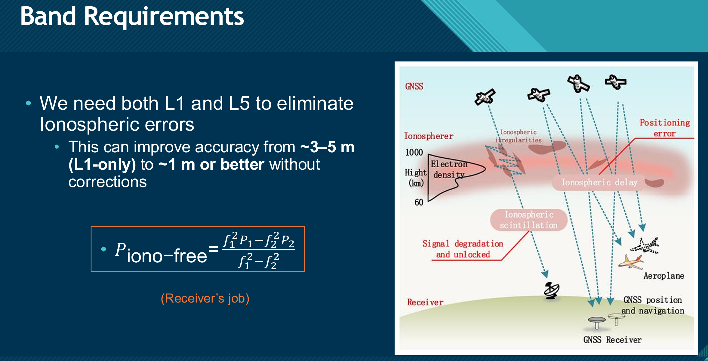
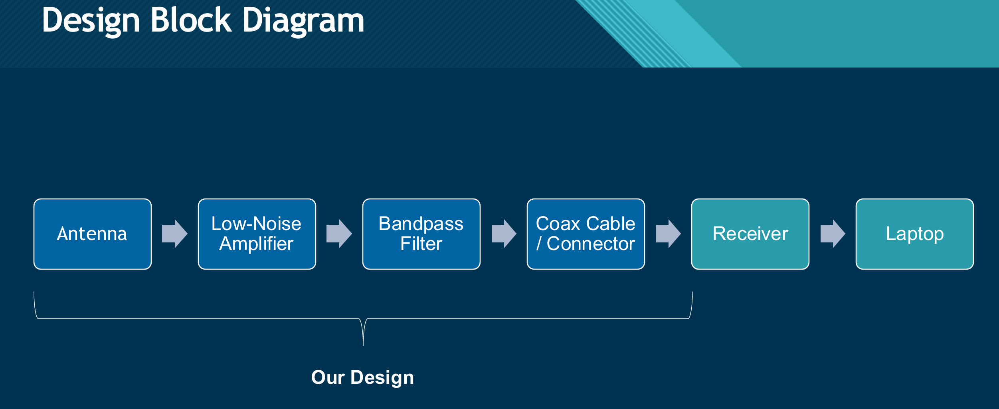
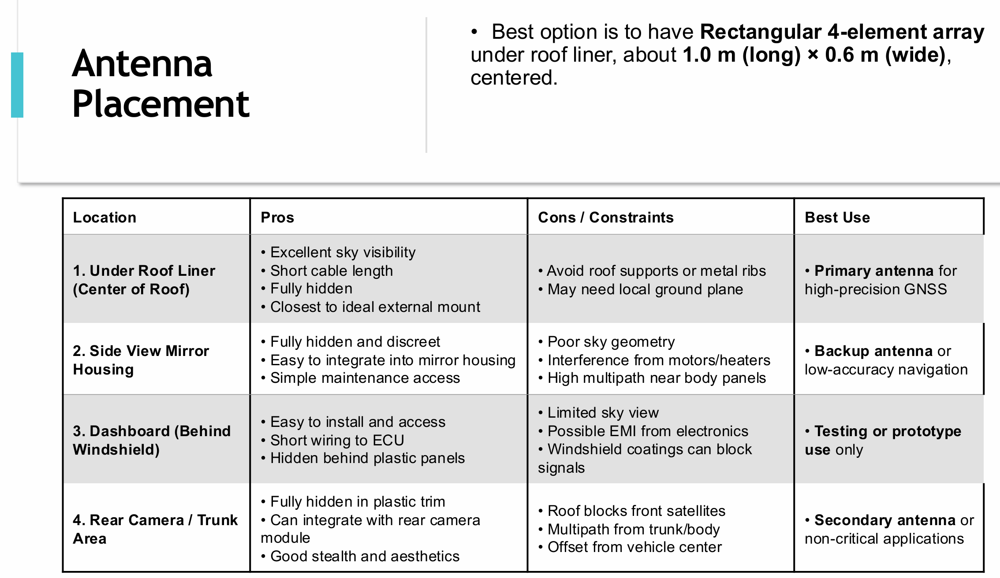
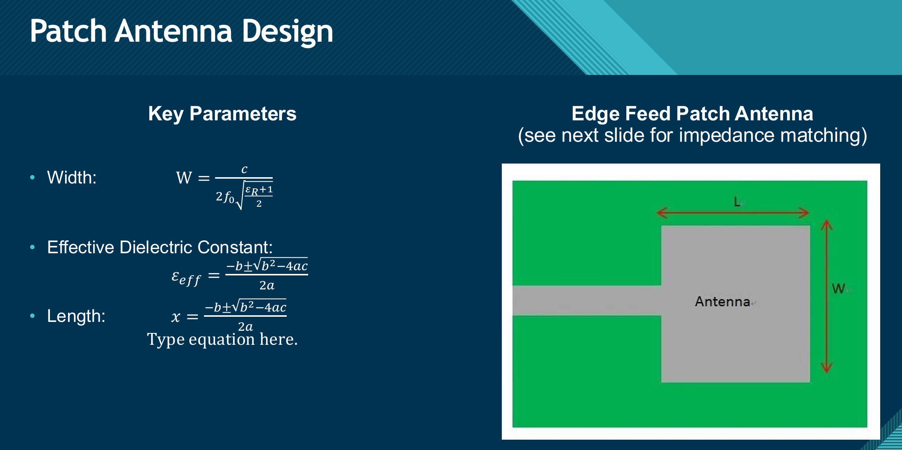
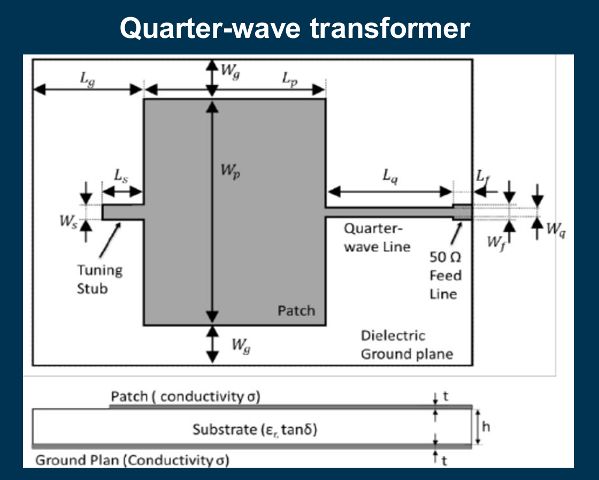
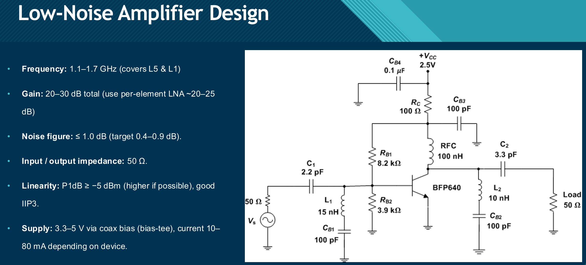
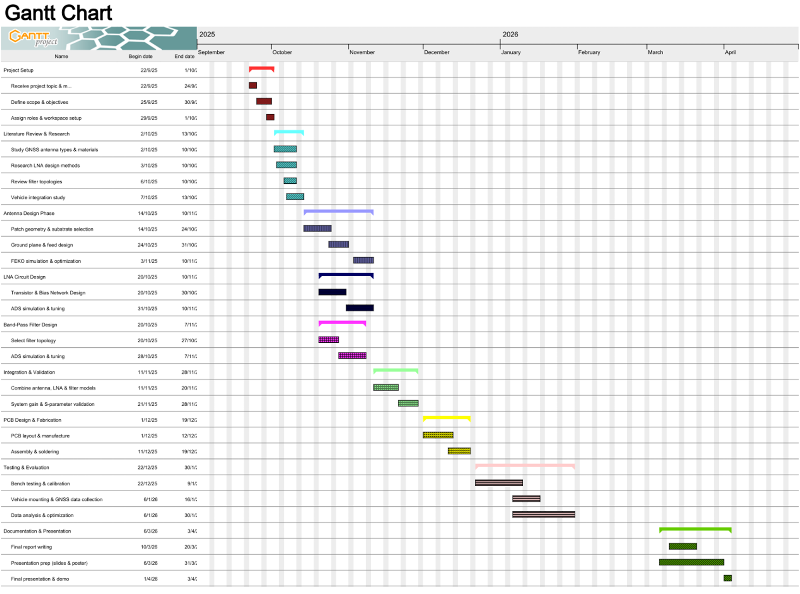

For my capstone project, our team designed a compact dual-band GNSS antenna system intended for autonomous vehicle applications. The goal was to support both GPS L1 (1575.42 MHz) and L5 (1176.45 MHz) to improve positioning reliability, reduce ionospheric error effects, and maintain consistent performance in a realistic automotive environment where multipath and interference can significantly degrade GNSS reception.
Single-frequency GNSS positioning can be strongly affected by ionospheric delay and signal distortion, which becomes more noticeable in challenging environments like cities and near large reflective surfaces. By using both L1 and L5, the receiver can apply ionosphere-compensation techniques that improve accuracy and stability. Our design work focused on enabling this dual-band reception while keeping the antenna system practical for hidden vehicle integration.

The complete system was designed as an end-to-end RF chain: antenna, low-noise amplifier (LNA), bandpass filtering, and a 50 ohm output connection to a receiver for data collection and analysis. The key objective at the system level was to preserve weak GNSS signals, amplify them early to protect signal-to-noise ratio, and reject out-of-band interference before the receiver stage.

A major part of the project was evaluating antenna topology and placement constraints for an autonomous vehicle. We compared practical antenna types and focused on approaches that could support dual-band operation while staying compact and manufacturable. We also considered real installation limitations such as sky visibility, cable loss, multipath reflections from vehicle body panels, and interference from nearby electronics.
For placement, the most promising concealed option was centred under the roof liner due to strong sky visibility and reduced asymmetry relative to the vehicle. We treated placement as a design variable, since mounting location can change performance even when the antenna design is unchanged.

Our antenna design work included patch-antenna sizing, substrate considerations, and impedance matching strategies. Since a practical GNSS receiver interface is 50 ohms, matching and feed geometry were treated as essential to keep return loss low and maintain usable bandwidth across both frequency bands. We reviewed and compared common matching methods, including inset feeds and quarter-wave transformer approaches, to understand the tradeoffs between size, fabrication tolerance, and bandwidth.


Because GNSS signals are extremely low power at the antenna, an LNA is critical to preserve signal quality before downstream losses and filtering. Our LNA design targets included high gain, low noise figure, and a stable 50 ohm match across the L-band region covering both L5 and L1. The amplifier stage was developed and evaluated in Keysight ADS, with attention to gain, noise performance, and practical biasing for integration into a compact RF system.

In addition to amplification, we planned for bandpass filtering to suppress unwanted frequencies and reduce the impact of out-of-band interference. Since the LNA can amplify everything within its operating bandwidth, filtering helps protect the receiver and improves overall selectivity, especially in a vehicle environment where multiple radios and electronics can be operating at the same time.
PCB material selection and stack-up decisions matter at GNSS frequencies because dielectric loss can directly reduce signal-to-noise ratio. We compared common substrate options and treated loss as a real system tradeoff against cost and manufacturability. This helped guide the direction of the physical implementation plan and informed what would be realistic for fabrication constraints.
The validation plan focused on measuring GNSS performance under realistic conditions and comparing results across different mounting locations inside a vehicle. The idea was to combine simulation-driven design with field data to determine which hidden integration position gives the best balance of signal integrity, consistency, and practicality. Data collected through the receiver would be used to evaluate performance trends and guide final design decisions.
This project was planned in staged phases: research, antenna and circuit design, simulation, integration, fabrication, and testing. A formal Gantt chart and task breakdown were created to track responsibilities, keep milestones realistic, and manage the design pipeline from early modelling through to final validation and reporting.

This capstone project tied together antenna theory, RF circuit design, system-level thinking, and practical integration constraints in an autonomous-vehicle use case. Designing for both L1 and L5, planning for low-noise amplification and filtering, and treating vehicle placement as part of the engineering problem made the work feel very realistic and directly connected to modern GNSS-driven autonomy.
If you'd like to know more about my work or discuss potential collaborations, feel free to contact me via email or phone.
Toronto, Ontario
Canada, L4J 9K2